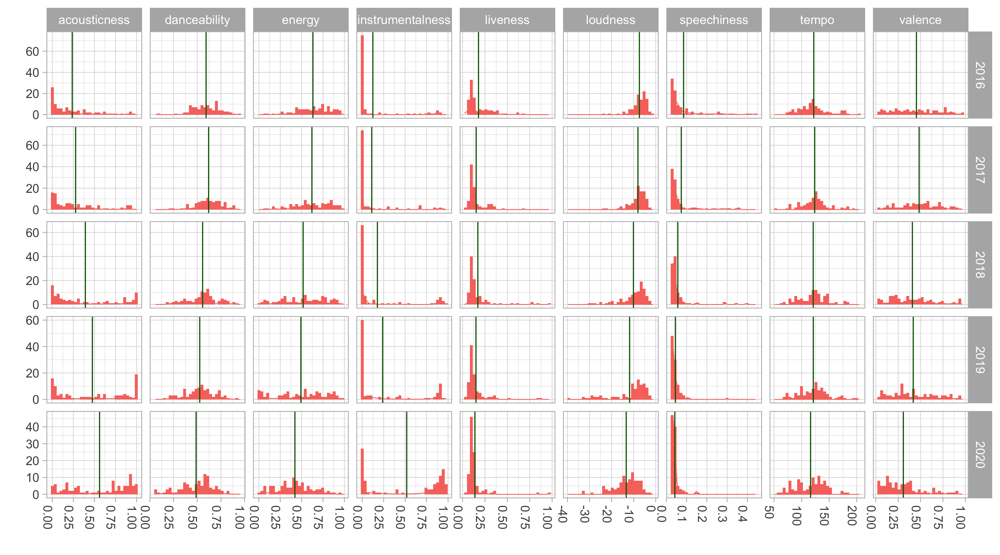
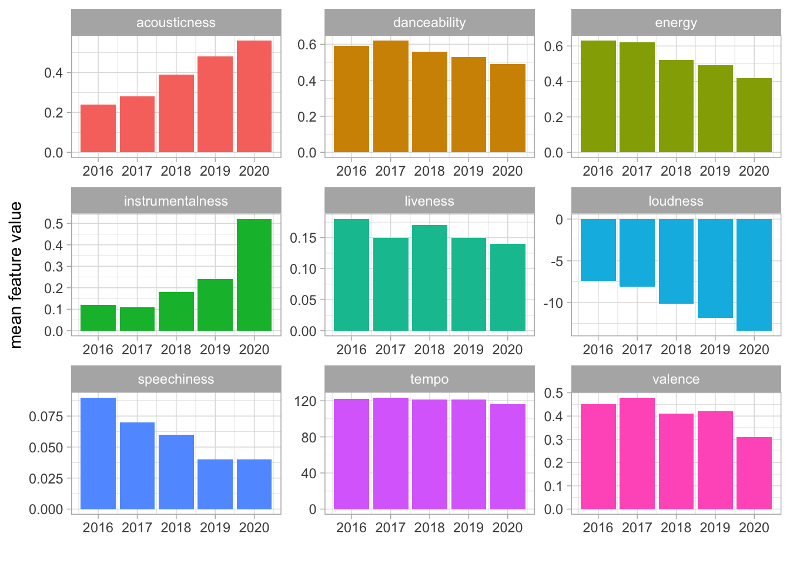

I’ve been an avid Spotify user since my younger high-school gaming days (hipster flex), but Spotify only recently started releasing yearly music reviews that summarize the music you’ve listened to throughout that year. After seeing mine for 2020, I wondered how much my music taste had changed over time, especially given the 2020 coronavirus pandemic. Thankfully there’s a R package called spotifyr that provides intuitive wrapper functions that allows one to analyze practically the entirety of Spotify music data! What follows is a quick, informal dive into this. (For getting setup, I suggest checking out the Github repo here and this tutorial here.)
To answer my question, I’m using my “Top 100 songs of the Year” from 2016-2020 (500 songs), looking specifically at nine features associated with each song (pretty neat that Spotify does this!). I knew I’d been listening to more instrumental, acoustic music since I started learning to play guitar, so I was curious about what the data showed. The features, from their API:
Wellp, looking at the different facets, looks like acousticness and instrumentalness has increased, just as suspected. But valence (positive emotion) has decreased, hitting a low in 2020! Whether or not I was actually sadder on average each day of 2020 is another story…

Here’s a closer look via some bar plots. The general trend is that everything has decreased for each feature except acousticness and instrumentalness. Loudness has decreased though, which maybe just means I’m getting older… or more sensitive to loud music. But it makes sense if you think about the increase in acousticness.

And numbers. Voilà, une table.
| features | 2016 | 2017 | 2018 | 2019 | 2020 |
|---|---|---|---|---|---|
| acousticness | 0.24 | 0.28 | 0.39 | 0.48 | 0.56 |
| danceability | 0.59 | 0.62 | 0.56 | 0.53 | 0.49 |
| energy | 0.63 | 0.62 | 0.52 | 0.49 | 0.42 |
| instrumentalness | 0.12 | 0.11 | 0.18 | 0.24 | 0.52 |
| liveness | 0.18 | 0.15 | 0.17 | 0.15 | 0.14 |
| loudness | -7.41 | -8.07 | -10.11 | -11.85 | -13.37 |
| speechiness | 0.09 | 0.07 | 0.06 | 0.04 | 0.04 |
| tempo | 122.08 | 123.69 | 121.12 | 121.26 | 116.32 |
| valence | 0.45 | 0.48 | 0.41 | 0.42 | 0.31 |
I’d say from personal experience that this trend toward increased acousticness and instrumentalness is a general feature of widened musical taste. I imagine it’s also associated with more bouts of work and study sessions, especially in 2020 given I started graduate school. But I also discovered more music of an acoustic, instrumental nature (Olafur Arnalds, City of the Sun, Max Richter) which I played HEAVILY on repeat while slacklining and rollerblading, two new hobbies I picked up over the summer. My love of fingerpicking on guitar probably has an influence on that too.
As for the valence, well, let’s find out next year if that changes. I don’t actually feel like my subjective experience of days are all too different from the previous years, although some days are definitely lonelier. And in moments like those I often turn to music. What the data doesn’t capture is the upswing in mood I feel from that form of connection.